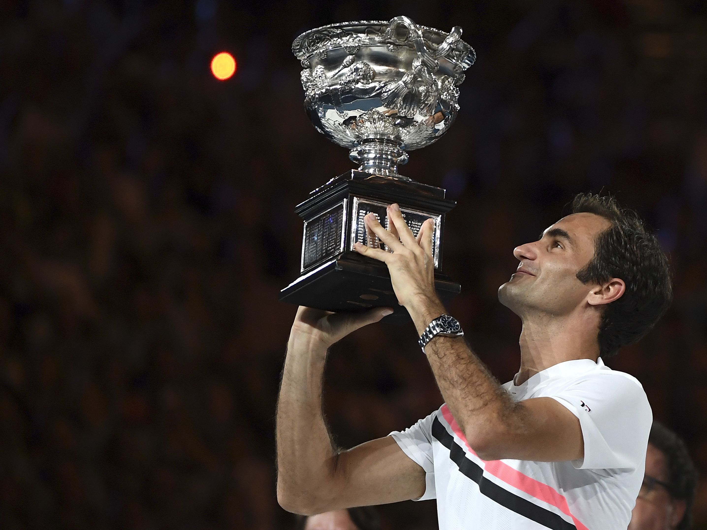

Pocetna
Karijera
Rezultati
Galerija
Slike
Video
Sponzori
WP-sajt
Rodžer Federer

Rodžer Federer učesnik je 31 Grend slem finala. Osvojio je 20 titula.
Tip turnira
Pobede
Porazi
Ukupno
Grend slem
20
11
31
Zavrsni turnir 1500
6
4
10
ATP masters 1000
28
22
50
Olimpijske igre
0
1
1
ATP 500
24
7
31
ATP 250
25
9
34
UKUPNO
103
54
157